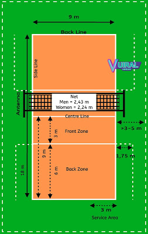

makalah olahraga pendidikan
- PENDIDIKAN OLAHRAGA DAN REKREASI - Kemdikbud
Olahraga Pendidikan adalah pendidikan jasmani dan olahraga yang dilaksanakan sebagai bagian proses pendidikan yang teratur dan berkelanjutan untuk memperoleh pengetahuan, kepribadian, keterampilan, kesehatan, dan kebugaran jasmani - Rpp Pendidikan Jasmani Olahraga dan Kesehatan / PJOK ...
Perbedaan yang kedua antara olahraga dan pendidikan jasmani adalah terletak pada orientasi yang diterapkan oleh dua istilah tersebut. Adapun mengenai orientasi dari olahraga adalah berkaitan dengan program latihan seperti misalnya program latihan bulu tangkis untuk pemula yang sebelumnya juga telah kami bahas khusus untuk anda.. Seorang pemain atau atlet tertentu harus melakukan serangkaian ... - makalah olahraga pendidikan - SlideShare
Sehingga Pendidikan Olahraga dan Rekreasi proses pembelajarannya secara langsung juga meningkatkan pertumbuhan dan perkembangan seluruh ranah yaitu psikomotor, kogni f dan afek f se ap peserta didik. Kesan yang di mbulkan dari Pendidikan Olahraga dan Rekreasi erat kaitannya dengan hal-hal yang menyenangkan dan - 5 Universitas Dengan Fakultas Olahraga Terbaik di ...
Pendidikan.Co.Id – Pada kesempatan ini kita akan membahas megnenai Olahraga, penjelasan pada artikel ini juga dilengkapi dengan beberapa point penting seperti pengertian olahraga menurut para ahli, tujuan, manfaat dan jenis olahraga, penjelasan selengkapnya sebagai berikut : - Haryadideni.blogspot: OLAHRAGA PENDIDIKAN
Olahraga pendidikan pada jalur pendidikan nonformal dapat dilaksanakan secara terstruktur dan berjenjang. Olahraga pendidikan sebagaimana dimaksud pada ayat (4) dan ayat (5) dibimbing oleh guru/dosen olahraga dan dapat dibantu oleh tenaga keolahragaan yang disiapkan oleh setiap satuan pendidikan. - (DOC) FILSAFAT PENDIDIKAN JASMANI DAN OLAHRAGA | Gigih ...
judul ”Strategi Pembelajaran Pendidikan Jasmani Olahraga dan Kesehatan Selama Pandemi Covid-19” selesai disusun. Buku ini merupakan karya anak bangsa, yang ditulis secara kolaboratif oleh para ... - Tujuan Pendidikan Jasmani Olahraga dan Kesehatan ...
Di Indonesia banyak Universitas yang membuka Fakultas Olahraga di dalamnya terdapat berbagai jurusan diantara, Jurusan Pendidikan Kepelatihan Olahraga, Jurusan Ilmu Olahraga, Jurusan Pendidikan Jasmani Kesehatan dan Rekreasi, dan Jurusan PGSD Penjas. Lalu Universitas mana saja, okey mari kita lihat. 1. Universitas Pendidikan Indonesia (UPI) Universitas Pendidikan Indonesia merupakan ... - Makalah Olahraga dan Pendidikan Jasmani ~ Makalah
Lutan, Rusli. (1999). Krisis Global Pendidikan Jamani; Reinterpretasi Hasil Kongres World Summit On Physical Education dan Kesan Tentang Keolahragaan Jerman. Fakultas Pendidikan Olahraga dan Kesehatan: Universitas Pendidikan Indonesia. _____ (2001). Olahraga dan Etika Fair Play. Direktorat Jendral Olahraga: Departemen Pendidikan Indonesia. - Pengertian Olahraga, Tujuan, Manfaat, Jenis dan Menurut Ahli
Judul Skripsi Pendidikan Olahraga - Olahraga adalah proses sistematik yang berupa segala kegiatan atau usaha yang dapat mendorong mengembangkan, dan membina potensi-potensi jasmaniah dan rohaniah seseorang sebagai perorangan atau anggota masyarakat dalam bentuk permainan, perlombaan/ pertandingan, dan kegiatan jasmani yang intensif untuk memperoleh rekreasi, kemenangan, dan prestasi puncak ... - PENDIDIKAN JASMANI DAN OLAHRAGA: PENGERTIAN PENDIDIKAN ...
Pendidikan jasmani olahraga dan kesehatan mengajarkan kebiasaan baik bagi para siswa supaya dapat tumbuh dan berkembang dengan baik. Dengan belajar mengenai olahraga, siswa akan menjadi lebih sehat sehingga akan tumbuh menjadi manusia dengan fisik yang sehat, bugar, dan kuat. Selain itu, perkembangan psikis anak juga akan menjadi lebih baik ...

Slideshare uses cookies to improve functionality and performance, and to provide you with relevant advertising. If you continue browsing the site, you agree to the use of cookies on this website. See our User Agreement and Privacy Policy .
Slideshare uses cookies to improve functionality and performance, and to provide you with relevant advertising. If you continue browsing the site, you agree to the use of cookies on this website. See our Privacy Policy and User Agreement for details.
SlideShare Explore Search You Upload Login Signup Home Explore Successfully reported this slideshow. We use your LinkedIn profile and activity data to personalize ads and to show you more relevant ads. You can change your ad preferences anytime. makalah olahraga pendidikan Upcoming SlideShare Loading in … 5 × 1 1 of 13 Like this document? Why not share! Share Email Isi manajemem by agung adi 1270 views Makalah pengembangan kurikulum (pow... by Kholikul Anwar 1483 views 59770009 makalah-pendidikan-jasmani-5 by ery cell 3786 views Makalah Landasan Pengembangan Kurik... by Bank Makalah 3204 views Makalah kurikulum 2013 by Laili Octadianti 9549 views Program ujian praktek by Gencar Niagara 3674 views Share SlideShare Facebook Twitter LinkedIn Embed Size (px) Start on Show related SlideShares at end WordPress Shortcode Linkmakalah olahraga pendidikan
17,793 viewsShare Like Download ...
Ani Mahisarani
, Working at Sumedang FollowPublished on Mar 22, 2016
mata kuliah pendidikan jasmani dan kesehatan
program s1 pgsd
stkip sebelas april sumedang
2015
Login to see the comments
Lutvi Ansyah 4 months ago hARYOK2 10 months ago HeLita FitRita 1 year ago Derips Pussung 2 years ago Hendra Jaya 3 years ago Show More No Downloads Views Total views 17,793 On SlideShare 0 From Embeds 0 Number of Embeds 8 Actions Shares 0 Downloads 204 Comments 6 Likes 8 No notes for slidemakalah olahraga pendidikan
1. OLAHRAGA PENDIDIKAN MAKALAH Diajukan untuk Memenuhi Salah Satu Tugas Mata Kuliah Pendidikan Jasmani dan Kesehatan Disusun oleh: Kelompok 1 1. Ani Mahisarani 2. Dini Lestari 3. Kusniadi 4. Okky Deri A 5. Ridwan Nugraha 6. Widaningsih Kelas: 2D-PGSD PROGRAM STUDI PENDIDIKAN GURU SEKOLAH DASAR (PGSD) SEKOLAH TINGGI KEGURUAN DAN ILMU PENDIDIKAN (STKIP) SEBELAS APRIL SUMEDANG 2015 2. KATA PENGANTAR Puji syukur penyusun panjatkan kehadirat Allah SWT, karena atas rahmat- Nya maka penyusun dapat menyelesaikan penyusunan makalah yang berjudul “Olahraga Pendidikan”. Penyusunan makalah ini merupakan salah satu tugas dan persyaratan untuk menyelesaikan tugas mata kuliah Pendidikan Jasmani dan Kesehatan. Dalam Penyusunan makalah ini penyusun merasa masih banyak kekurangan-kekurangan baik pada teknis penyusunan maupun ringkasan materi, mengingat akan kemampuan yang dimiliki penyusun. Untuk itu kritik dan saran dari semua pihak sangat penyusun harapkan demi penyempurnaan penyusunan makalah ini. Khususnya, penyusun ucapkan terima kasih kepada Bapak Cecep Supriadi, S.Pd., M.Pd selaku dosen mata kuliah Pendidikan jasmani dan Kesehatan yang telah memberi tugas makalah ini. Akhirnya penyusun berharap semoga Allah memberikan imbalan yang setimpal pada mereka yang telah memberikan bantuan dan semoga makalah ini dapat bermanfaat untuk pembaca khususnya rekan-rekan mahasiswa pada umumnya. Sumedang, Mei 2015 Penyusun DAFTAR ISI KATA PENGANTAR ........................................................................................i 3. DAFTAR ISI .......................................................................................................ii BAB I PENDAHULUAN 1.1 Latar Belakang......................................................................................1 1.2 Rumusan Masalah................................................................................2 1.3 Tujuan...................................................................................................2 1.4 Sistematika Penulisan...........................................................................2 BAB II PEMBAHASAN 2.1 Pengertian Olahraga Pendidikan...........................................................3 2.2 Komponen Olahraga Pendidikan ........................................................3 2.3 Tujuan Olahraga Pendidikan ................................................................4 2.4 Jalur Pendidikan .................................................................................4 2.5 Ciri-ciri Olahraga Pendidikan...............................................................6 2.6 Contoh-contoh Olahraga Pendidikan....................................................7 BAB III SIMPULAN...........................................................................................12 DAFTAR PUSTAKA .........................................................................................iii 4. BAB II PEMBAHASAN 2.1 Pengertian Olahraga Pendidikan Olahraga adalah aktivitas gerak manusia menurut teknik tertentu dalam pelaksanaannya ada unsur bermain, rasa senang, dilakukan di waktu luang, kepuasan dalam proses, jika tidak dilaksanakan ada sanksi dan nilai positif. Olahraga Pendidikan ialah ketika seseorang atau sekelompok orang melakukan olahraga dengan tujuan untuk pendidikan, maka semua aktivitas gerak diarahkan untuk memenuhi tuntunan tujuan-tujuan pendidikan. Oleh karena itu, olahraga yang bertujuan untuk pendidikan ini identik dengan aktivitas pendidikan jasmani. Menurut Nixom dan Cozens (1959) mengemukakan pendidikan jasmani adalah fase dari proses pendidikan keseluruhan yang berhubungan dengan aktivitas berat yang mencakup sistem, otot, serta hasil belajar dari partisipasi dalam aktivitas tersebut. Menurut Volter dan Eslinger (Bucher 1964) mengemukakan pendidikan jasmani adalah fase pendidikan melalui aktivitas fisik. Menurut UNESCO yang tertera dalam International Charte Of Physical Education (1974) mengemukakan pendidikan jasmani adalah suatu proses pendidikan seseorang sebagai individu maupun sebagai anggota masyarakat yang dilakukan secara sadar dan sistematik melalui berbagai kegiatan jasmani dalam rangka memperoleh peningkatan kemampuan dan keterampilan jasmani, pertumbuhan kecerdasan dan pembentukan watak. 2.2 Komponen Olahraga Pendidikan Olahraga pendidikan memiliki dua komponen, yaitu bermain dan olahraga, tetapi tidak mesti harus selalu ada keduanya, baik salah satu atau lengkap dalam takaran yang berimbang antara keduanya. Bermain dan olahraga mengandung bentuk gerak fisik, dan keduanya dapat cocok dalam konteks pendidikan jika dipakai sebagai relaksasi dan kegembiraan, tanpa tujuan pendidikan. Olahraga dan bermain dapat dilakukan, semata-mata hanya untuk kesenangan, pendidikan atau 5. kombinasi antara keduanya. Kesenangan atau kegembiraan tidak terpisahkan dari pendidikan, keduanya dapat dan harus disatukan. 2.3 Tujuan Olahraga Pendidikan Tujuan olahraga itu tertentu, tergantung kepada jenis olahraga yang akan diikuti. Misalnya jenis olahraga pendidikan, olahraga yang dilaksanakan sebagai proses pendidikan yang teratur dan berkelanjutan untuk memperoleh pengetahuan, kepribadian, keterampilan, kesehatan, dan kebugaran jasmani. Olahraga sebenarnya sangat dibutuhkan pada jenjang pendidikan. Pertama, membantu dalam meningkatkan pemahaman sportifitas dan kebugaran jasmani. Kedua, Meningkatkan fungsi otak. Penerapan aktivitas olahraga dapat mendorong kreatifitas dan membantu penyerapan materi pendidikan lainnya. Ketiga, Menyiapkan atlet yang nantinya akan berlaga dalam kejuaraan antar instansi pendidikan tinggi. Karena di dalam badan yang sehat terdapat jiwa yang kuat. 2.4 Jalur Pendidikan Olahraga pendidikan dilaksanakan sebagai bagian dari proses pendidikan dengan jalur formal, nonformal, dan informal serta didukung dengan perangkat yang ada didalamnya. a. Pendidikan Formal Pendidikan formal adalah jalur pendidikan yang terstruktur dan berjenjang yang terdiri atas pendidikan dasar, pendidikan menengah, dan pendidikan tinggi. Olahraga pendidikan formal biasanya kita temukan disekolah-sekolah dengan implikasinya, diharapkan dalam jangka yang pendek, paling tidak diarahkan para siswa memiliki kebugaran jasmani, kesenangan melakukan aktifitas fisik dan olahraga dan terbentuklah manusia yang sehat secara jasmani. Olahraga dilaksanakan pada instansi pendidikan formal guna meningkatkan jiwa sportifitas dan kebugaran jasmani. Penerapannya 6. sesuai pasal 18 ayat 4 dilaksanakan pada setiap jenjang pendidikan. Sepengetahuan kami, jenjang pendidikan di indonesia dilaksanakan dari sekolah tingkat dasar sampai sekolah tingkat tinggi. Penerapan olahraga pendidikan telah dilaksanakan pada setiap jenjang, meliputi SD, SMP dan SMA. Akan tetapi masih sedikit diterapakan pada jenjang perguruan tinggi, kecuali perguruan tinggi yang mempunyai fakultas berbasis olahraga. Jika melihat dan menerapkan apa yang ada dalam undang-undang, rasanya sudah sepantasnya hal ini diterapkan pada jenjang pendidikan tinggi. setidaknya pada subjek ini diterapkan dalam sebuah mata kuliah. Namun, kenyataannya belum diterapkan di seluruh instansi pendidikan tinggi. Alasan pendidikan olahraga belum dapat diterapkan pada jenjang pendidikan tinggi. 1) Kurikulum Pendidikan Tinggi. Pada instansi pendidikan tinggi yang memang tidak berbasis olahraga belum menerapkan sisipan materi olahraga dalam perkuliahannya. Pertama, sosialisasi UU RI No.3 tahun 2005 belum menjangkau sampai instansi pendidikan tinggi yang tidak berbasis olahraga. Kedua, keterbutuhan mata kuliah yang disusun dirasa cukup dalam mengembangkan potensi mahasiswa. Sehingga olahraga pendidikan tidak dimasukan. 2) Tenaga Pengajar. Pengelolaan olahraga pendidikan tidak terlepas dari tenaga pengajar dalam proses pelaksanaannya. Kekurangan tenaga pengajar menjadi hal penghambat penerapan olahraga pendidikan di semua jenjang 7. pendidikan. Karena kewajiban dosen bukan hanya mengajar akan tetapi juga melakukan penelitian. Sehingga jelas, ketika hal ini dilaksanakan untuk satu univeritas maka dosen sebagai pengajar olahraga pendidikan tidak akan sanggup melakukan proses pembelajaran. Itulah sebabnya penerapan kebijakan ini masih belum dapat terlaksana. b. Pendidikan Nonformal pendidikan nonformal adalah jalur pendidikan diluar pendidikan formal yang dapat dilaksanakan secara terstruktur dan berjenjang. Olahraga pendidikan nonformal biasanya kita temukan di lembaga kursus, lembaga pelatihan, organisasi pecinta alam dan lingkungan, organisasi seni dan olahraga, dan organisasi lain yang sejenisnya. c. Pendidikan Informal Pendidikan informal adalah jalur pendidikan keluarga dan lingkungan. Olahraga pendidikan informal biasanya kita temukan di pendidikan anak usia dini. Pendidikan anak usia dini pada jalur pendidikan informal berbentuk pendidikan keluarga atau pendidikan keluarga yang diselenggarakan oleh lingkungan. Pendidikan yang dilakukan oleh keluarga adalah salah satu dasar yang akan membentuk watak, kebiasaan, dan perilaku anak di masa depannya nanti. 2.5 Ciri-ciri Olahraga Pendidikan Olahraga pendidikan terdapat ciri-ciri sebagai berikut : a. Diselenggarakan oleh lembaga pendidikan terutama sekolah; b. Memberikan kesempatan yang sama; c. Tidak membedakan yang bisa dan belum bisa dalam pembelajaranya; dan d. Memberikan gerak sebebas-bebasnya agar yang tidak bisa menjadi bisa. 8. 2.6 Contoh-contoh Olahraga Pendidikan a. Atletik 1) Lari jarak pendek Lari jarak pendek atau sprint adalah nomor-nomor lari dari mulai lari 100M sampai dengan jarak 400M. 2) Lari jarak menengah dan jauh Nomor-nomor lari ini dapat diklasifikasikan ke dalam nomor lintasan, nomor jalanan, misalnya maraton, dan nomor alam, misalnya lomba lari lintas alam. Lari pada jarak menengah yaitu lari 800, 1500, dan 3000M. Serta lari jarak jauh yaitu 5000, 10000, dan lari maraton 42.195M. Tujuan lari menengah dan jauh adalah melampaui sebuah jarak yang cukup jauh dengan waktu yang secepat-cepatnya. seberapa cepat seseorang melampaui jarak yang cukup jauh tersebut akan bergantung kepada beberapa faktor, antara lain daya tahan, evisiensi gerak lari, distribusi energi pada keseluruhan jarak tempuh, dan power pada saat mulai merasa lelah. namun dari keseluruhan faktor tersebut, daya tahan merupakan faktor utama pemberi kontribusi terhadap lari jarak jauh. 3) Teknik Start Pada dasarnya terdapat tiga teknik start yang lazim dilakukan oleh seorang pelari, yaitu : -Untuk lari jarak pendek, pelari menggunakan teknik start jongkok (crouching start) -Untuk lari estafet, pelari menggunakan teknik start melayang (flying start). Flying start ini bukan berarti pelari melakukan start sambil melayang di udara tetapi start dilakukan sambil berlari terutama ketika sedang melakukan pemindahan tongkat estafet. 9. -Untuk lari jarak menengah dan jauh, pelari menggunkan teknik Start berdiri (standing start). b. Senam Dasar gerakan senam merupakan proses pembelajaran pembentukan dasar gerak yang lebih bersifat umum, seperti berjalan, mengayun, berputar, melompat atau meloncat, dan sebagainya. Dalam olahraga pendidikan dikenal dengan gerakan dasar atau pundamental movement yang dapat dibagi kedalam tiga kategori yaitu lokomotor, nonlokomotor atau stability, dan manipulatif. Senam khusus merupakan bentuk kegiatan sebagai prasyarat untuk memperoleh kemampuan keterampilan yang khusus, seperti persiapan kemampuan fisik serta memiliki sifat searah pembentukan elemen teknik sesuai dengan cabang olahraga tertentu. Senam prestasi merupakan senam untuk tujuan prestasi artinya senam sebagai cabang olahraga yang menekankan aspek prestasi tinggi. Macam-macam senam diantaranya senam dasar dan senam ritmik. senam dasar adalah keterampilan yang lebih kompleks sebagai prasyarat gerakan dari mulai yang sederhana sebagai pendukung. Misalnya gerakan roll atau mengguling, merupakan keterampilan dasar untuk gerakan salto yang baik, handstand sebagai prasyarat gerakan handspring dll. sedangkan senam ritmik adalah gerakan senam yang dilakukan dalam irama musik atau latihan bebas yang dilakukan secara berirama. c. Permainan Bola Kecil 1) Tenis Meja Permainan Tenis meja merupakan permainan yang menggunakan Badge sebagai alat pemukul, bola ping pong dan meja untuk bermain. Permainan ini dimaikan oleh dua orang untuk kategori tunggal dan empat orang untuk kategori ganda. Olahraga ini mempunyai nama resmi yaitu bola ping pong. 10. Di Indonesia olahraga tenis meja mempunyai Induk yaitu PTMSI (Persatuan Tenis Meja Seluruh Indonesia), sedangkan untuk Induk tenis meja tingkat dunia adalah ITTF International Table Tennis Federation). Indonesia tergabung dalam ITTF sejak tahun 1961. 2) Bulu Tangkis Permainan Bulu tangkis merupakan suatu permainan yang setiap pemainnya menggunakan sebuah raket. Dalam permainan ini dipergunakan sebuah kok (shuttlecock) sebagai pengganti bola yang dipukul secara bergantian oleh setiap regu yang sedang bertanding. Teknik dasar memukul bola dalam permainan bulu tangkis adalah pukulan servis, pukulan lob, drive, netting, smes, dan dropshort. 3) Kasti Kasti adalah suatu olahraga permainan yang dilakukan secara beregu,yaitu dimainkan oleh dua regu. Setiap regu terdiri dari 12 pemain, permainan kasti ini dimainkan di lapangan yang mempunyai bentuk empat persegi panjang yang dibatasi oleh garis batas dengan lebar garis yaitu 5 cm atau menggunakan tali tambang. Permainan ini menggunakan bola kasti dan kayu pemukul sebagai alat permainan. d. Permainan Bola Besar 1) Sepak Bola Sepak bola adalah salah satu permainan bola besar yang pelaksanaannya dimainkan secara beregu. Dalam permainan sepak bola setiap regu berjumlah sebelas orang. Sehingga, setiap regu pemain sepak bola juga disebut sebagai kesebelasan. Tujuan dari permainan sepak bola adalah untuk memasukkan bola ke gawang lawan sebanyak mungkin dan mencegah bola lawan agar tidak dapat masuk ke gawang. 11. Permainan Sepak Bola ini dipimpin oleh seorang wasit dengan dibantu dua orang penjaga garis sehingga pelaksanaan permainan dapat berjalan adil dan baik. Di Indonesia perkembangan Sepak Bola ditandai dengan pembentukan pada Persatuan Sepak Bola Seluruh Indonesia (PSSI) pada tanggal 19 April 1930. Yang menjadi ketua umum PSSI pertama kali adalah Ir. Suratin Sastro Sugondo. Untuk mengenang jasanya maka mulai tahun 1966 diselenggarakan kejuaraan sepak bola untuk tingkat taruna remaja. Piala yang diperebutkan dinamakan piala Suratin. 2) Bola Voli Bola voli adalah salah satu jenis permainan yang termasuk dalam permainan bola besar. Permainan bola voli juga dilakukan oleh dua regu. Dalam permainan bola voli tiap regu terdiri dari enam pemain. Dalam permainan bola voli, setiap regu saling memantulkan bola yang melewati atas net. Setiap regu berusaha mematikan gerakan lawan sehingga tidak mampu mengembalikan bola dari pukulan atau pantulan bola dari lawan. Permainan bola voli merupakan permainan bola besar yang berasal dari Amerika Serikat. Permainan ini diciptakan oleh William G. Morgan. Permainan ini berkembang pesat di Amerika Serikat sehingga pada tahun 1922 Young Man Cristien Association sukses menyelenggarakan kejuaraan nasional bola voli. 3) Permainan Bola Basket Basket merupakan permainan bola besar yang dimainkan oleh dua regu, baik putra maupun putri. Setiap regu terdiri atas lima orang pemain. Tujuan dilakukannya permainan bola basket adalah mencari nilai atau angka sebanyakbanyaknya dengan cara memasukkan bola ke keranjang lawan dan menghalangi masuknya bola ke keranjangnya sendiri dari serangan lawan. Setiap pemain bola basket dapat memainkan bola dengan cara, yaitu mendorong bola, memukul bola dengan telapak tangan terbuka, melemparkan, menggelindingkan dan 12. menggiring atau mendribel bola ke segala arah dalam lapangan pemain. e. Renang Renang merupakan salah satu gerakan yang dilakukan di dalam air yang dapat dilakukan oleh manusia dan hewan. Umumnya hewan berenang untuk beberapa tujuan seperti mencari mangsa, mendinginkan suhu tubuh, berpindah dari satu tempat ke tempat lainnya. Sedangkan manusia menjadikan renang sebagai sarana olahraga, rekreasi, ataupun mencari ikan, mutiara atau hewan air lainnya. Manusia dan hewan dapat berenang di sungai, danau, laut dan kolam renang. Berenang dapat dilakukan oleh siapa saja dari berbagai usia dan kalangan masyarakat. Olahraga renang untuk perlombaan atau rekreasi dilakukan di kolam renang. Berenang merupakan olahraga yang sangat baik bagi kesehatan tubuh karena hampir semua otot dan persendian bergerak ketika berenang. Olahraga renang dapat dilakukan oleh siapa saja baik putra maupun putri. f. Pencak Silat Pencak silat atau silat adalah suatu seni bela diri tradisional yang berasal dari Indonesia. Pencak silat termasuk ke dalam olahraga bela diri yang memerlukan banyak konsentrasi. 13. DAFTAR PUSTAKA Mardiana Ade, dkk. (2010). Pendidikan Jasmani dan Olahraga. Jakarta: Universitas Terbuka. sugar-science.blogspot.com (diakses pada 7 Mei 2015) www.informasi-pendidikan.com (diakses pada 7 Mei 2015) dodolanweb.blogspot.com (diakses pada 7 Mei 2015) www.g-excess.com (diakses pada 7 Mei 2015) Recommended Explore professional development books with Scribd Scribd - Free 30 day trial Isi manajemem agung adi Makalah pengembangan kurikulum (power point) kholikul anwar iii b staim ta Kholikul Anwar 59770009 makalah-pendidikan-jasmani-5 ery cell Makalah Landasan Pengembangan Kurikulum Program Studi PJKR - PGSD PenJas Bank Makalah Makalah kurikulum 2013 Laili Octadianti Program ujian praktek Gencar Niagara Makalah pendidikan jasmani dan olahraga Habibi Muhammad I wayan repiyasa repi yasa Evaluasi Kurikulum Ani Mahisarani Pertentangan sosial Ani Mahisarani English Español Português Français Deutsch About Dev & API Blog Terms Privacy Copyright Support×
Share Clipboard
× Facebook Twitter LinkedIn LinkPublic clipboards featuring this slide
× No public clipboards found for this slideSelect another clipboard
×Looks like you’ve clipped this slide to already.
Create a clipboardYou just clipped your first slide!
Clipping is a handy way to collect important slides you want to go back to later. Now customize the name of a clipboard to store your clips.